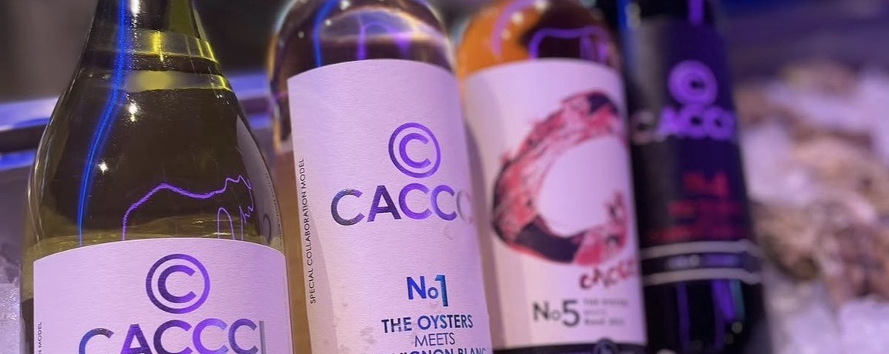

Q & A よくある質問
お客様からよくいただく質問をまとめました。
営業時間、ご予約、メニュー内容など、ご不明点がございましたらお気軽にお問い合わせください。
- Q 予約は必要ですか？どうやって予約できますか？
-
A
当日の空席があればご案内可能です。
お電話またはお問い合わせフォームからご連絡ください。 - Q 生牡蠣は安全ですか？
-
A
取り扱い・鮮度管理を徹底し、季節に合わせて厳選した牡蠣をご提供しています。
詳細は牡蠣についてをご覧ください。 - Q 牡蠣の産地はどこですか？
-
A
季節や入荷状況により国内外の産地から厳選して仕入れています。
当日のラインナップはスタッフまでお気軽にお尋ねください。 - Q アレルギー・苦手食材への対応はできますか？
-
A
可能な範囲で対応いたします。ご予約時またはご来店時にスタッフへお伝えください。
同一厨房での調理のため、完全な除去をお約束できない点はご了承ください。 - Q 小さなお子様連れでも利用できますか？
-
A
時間帯や混雑状況に応じてご案内いたします。
ベビーカーでの入店やお席のご希望があれば事前にご相談ください。 - Q 支払い方法は何がありますか？
-
A
クレジットカード、電子マネー、QRコード決済、現金などがご利用いただけます。
詳細は店頭またはお電話でご確認ください。 - Q テイクアウトはできますか？
- A テイクアウトは対応しておりません。
- Q 喫煙は可能ですか？
- A 店内は全席禁煙です。 喫煙は施設内の指定喫煙所をご利用ください。
- Q 団体利用・貸切はできますか？
-
A
人数やご予算に応じてご提案いたします。
イベント・パーティー利用をご希望の方はお問い合わせください。 - Q 苦手な生牡蠣以外のメニューはありますか？
-
A
グリルやフライなど加熱調理の牡蠣、海鮮や前菜、ドリンク各種をご用意しています。
詳しくはメニューをご覧ください。